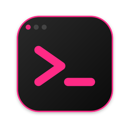
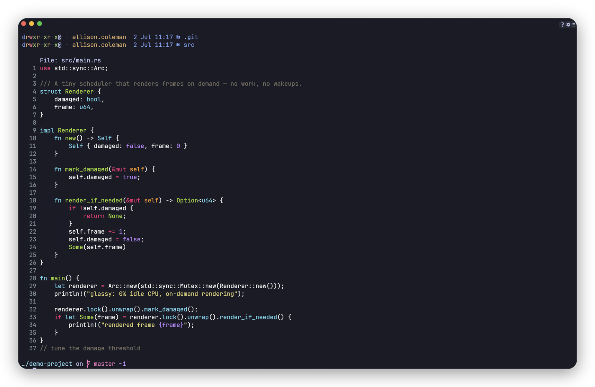
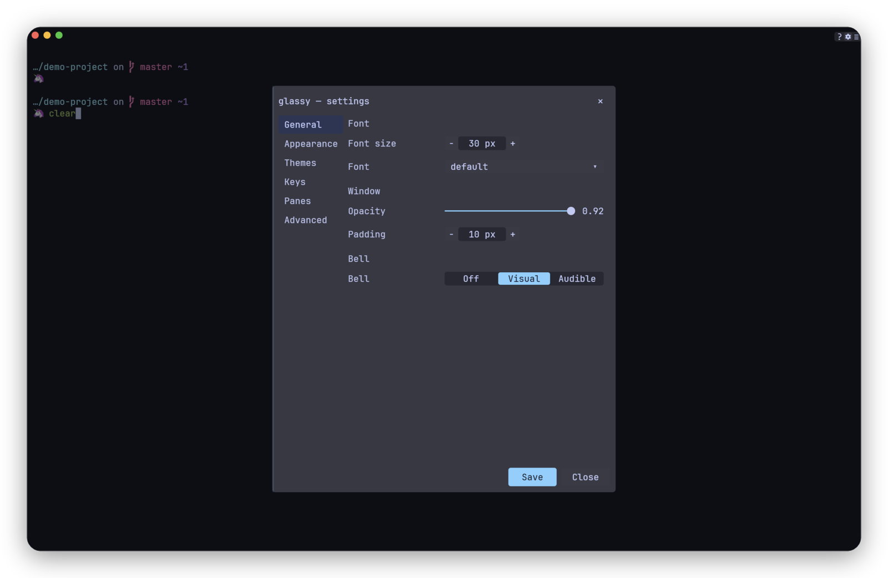
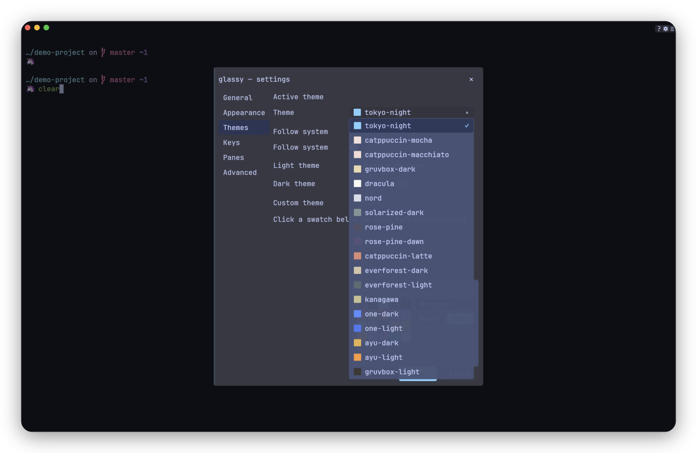
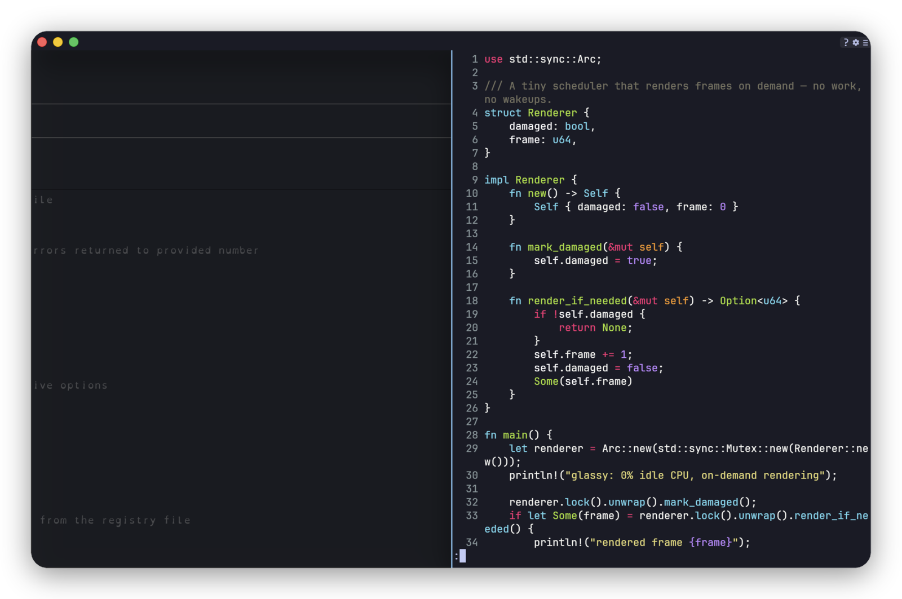
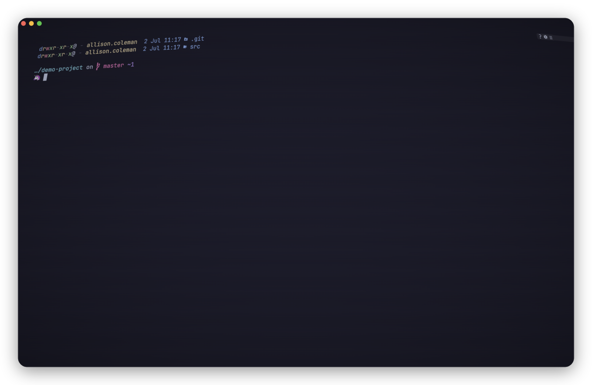

glassy install screenshots githubA small terminal emulator that draws on the GPU and otherwise stays out of the way.
Written in Rust on wgpu and alacritty_terminal. macOS and Linux.

GLASSY_GPU=high overrides it.



brew install --cask alliecatowo/tap/glassy
brew install alliecatowo/tap/glassy
The macOS app is ad-hoc signed, not notarized. The cask clears the quarantine flag for you.
curl -fsSL https://raw.githubusercontent.com/alliecatowo/glassy/main/scripts/install.sh | bash
Downloads the latest release binary, verifies its SHA-256 checksum and installs to ~/.local/bin.
sudo install -d -m 0755 /etc/apt/keyrings curl -fsSL https://alliecatowo.github.io/glassy/deb/glassy-archive-keyring.asc | sudo tee /etc/apt/keyrings/glassy.asc >/dev/null echo "deb [signed-by=/etc/apt/keyrings/glassy.asc] https://alliecatowo.github.io/glassy/deb/ ./" | sudo tee /etc/apt/sources.list.d/glassy.list >/dev/null sudo apt update && sudo apt install glassy
sudo dnf config-manager addrepo --from-repofile=https://alliecatowo.github.io/glassy/rpm/glassy.repo sudo dnf install glassy
Older dnf4: sudo dnf config-manager --add-repo https://alliecatowo.github.io/glassy/rpm/glassy.repo. openSUSE: zypper addrepo with the same URL.